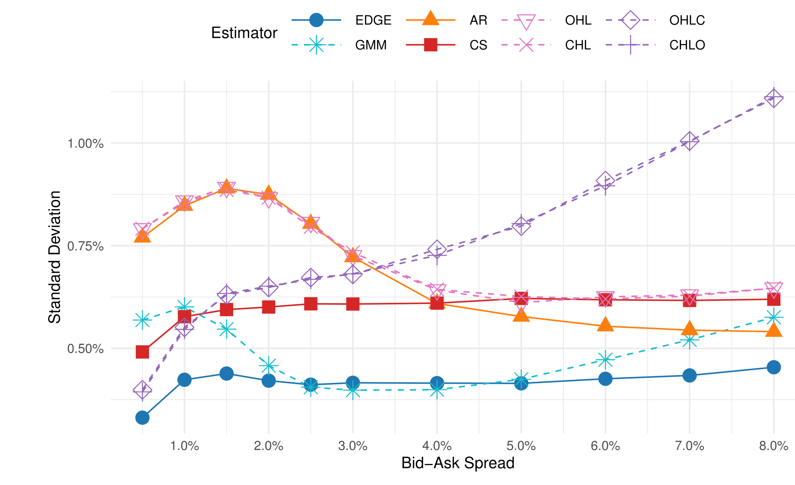
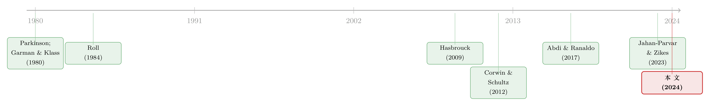

一天只成交几笔，价差还能量准吗？——把「离散」写进 bid-ask spread 的估计
本文读的是 Ardia, Guidotti & Kroencke (2024, Journal of Financial Economics)：几乎所有从交易价格反推「有效买卖价差」的低频估计量，都偷偷假设了价格是连续观测的；可真实市场里一段时间内只成交有限几笔，这个假设让它们在交易稀疏时系统性低估价差。作者把「离散」这件事显式写进估计量，得到一个渐近无偏、并且通过最优组合把估计方差压到最小的有效估计量 (efficient estimator)，在模拟、CRSP 实证、乃至加密货币上全面占优。
1 引言：一个被低估了几十年的「低估」
先抛一个看起来很无聊、实则要命的问题：你手里只有一只股票每天的开盘、最高、最低、收盘价（open, high, low, close，简称 OHLC），怎么估它的有效买卖价差 (effective bid–ask spread)？
这件事的重要性，远比它听起来要大。有效价差衡量的是成交价偏离那个看不见的基础价格 (fundamental price) 有多远，是金融市场里交易成本最主流的度量。要精确地量它，最好的办法当然是拿逐笔成交与报价 (trades and quotes) 的高频数据，把每一笔成交价和当时的报价中点比一比。但报价数据又贵又难找——国际市场没有、历史样本没有、股票以外的资产类别更没有。于是几十年来，一条「低频路线」蓬勃生长：只用交易价格、不碰任何报价，就把价差估出来。从 Roll (1984) 到 Corwin and Schultz (2012)，再到 Abdi and Ranaldo (2017)，这条线越走越精，被用在股票异象、市政债与公司债、债券基金、外汇、利率、货币政策、机器学习……几乎渗透进了实证金融的每一个角落。
低频估计量为什么越来越流行？不是因为它更准，而是因为它更可得。在拿不到报价数据的地方（公司债、加密货币、1993 年以前的美股），它常常是唯一的选择。所以它的偏差，会被原封不动地搬进无数下游研究。
可是，这些方法全都建立在同一个隐蔽的假设之上：价格是连续被观测到的。换句话说，它们（或显式、或隐式地）要求任意两个时刻之间「总有一笔成交」，于是价格像一条不间断的布朗运动那样徐徐展开。
接着，一个自然的问题是：现实真是这样吗？显然不是。真实市场里，一段时间内的成交笔数是有限的——一只小盘股、一个清淡的历史年份、一个被切到分钟级的高频区间，都可能在整段时间里只成交了寥寥几笔，甚至一笔。当成交极其稀疏时，开盘价、收盘价非常容易就等于了最高价或最低价（因为根本没有别的价格去刷新它们）。而这件事，恰恰是「连续观测」假设下概率为零的事件。
于是本文的张力出现了：正是在我们最需要价差度量、价差也最大的时候（交易最不活跃的资产、最久远的年代），这些经典估计量偏得最厉害——而且全是往下偏。 论文一句话把这个尴尬说得很透：现有估计量「在价差预计最大时低估它，在价差预计最小时高估它」。
2 关键的那把钥匙：指示变量 τ
要把「离散」这件事修正掉，得先有一个能识别它的工具。论文给的钥匙小得出奇——一个 0/1 指示变量：
$$ \tau_t = \begin{cases} 0 & \text{if } h_t = l_t = c_{t-1} \\ 1 & \text{otherwise} \end{cases} $$
它在「最高价 = 最低价 = 前一日收盘价」时取 0，否则取 1。τ_t = 0 意味着两种情形：要么这一期所有成交都发生在前收盘价上（成交越稀疏越可能），要么干脆没有交易、OHLC 全被前收盘价前向填充 (forward-filled) 了。反过来，τ_t = 1 保证了价格没有被前向填充，是「真有行情」的那些期。
这一步为什么是钥匙？因为接下来所有的修正，都落在「在 τ_t = 1 的条件下，开/收盘价有多大概率正好撞上最高或最低价」这件可观测、可估计的事情上。在连续观测的世界里，这个概率是零；在离散的真实世界里，它大得惊人。
到底有多大？论文的 Figure 1（此处不便嵌入，但值得记住这组数字）算了 1926–2021 年全体美国普通股，每只股票每个月里「开盘或收盘价 = 最高或最低价」的平均概率：大盘股约 25%，小盘股高达 75%，并且在最近二十年才有所下降。也就是说，对一只小盘股，四个价格里有四分之三的「极值」其实是开/收盘价假扮的。难怪忽略它的估计量会偏得离谱——而且越往历史深处、越往小盘股走，偏得越狠。
这里有一个特别反直觉的推论：如果你用日内（比如分钟级）价格而不是日度价格，每个时间区间里的成交笔数会更少，于是开/收盘价撞上最高/最低价的概率更高。也就是说——频率越高，离散修正反而越重要。这一点在第 5 节会变成一个漂亮的实证反转。
3 把「离散」一步步推进估计量
这是本文的方法内核，值得一步一步看清楚。沿用文献的设定，把价差写在对数价格上：
$$ p = \tilde{p} + Z, \qquad Z = \frac{S}{2D} $$
这里 \(\tilde p\) 是对数基础价格，\(Z\) 是买卖价差跳动 (bid–ask bounce)，\(D=\pm 1\) 是买/卖方向。论文只要三条假设：基础收益率无自相关（Assumption 1）、与价差跳动不相关（Assumption 2）、价差跳动彼此无关且零均值（Assumption 3）。注意，这比 Roll、Corwin-Schultz、Abdi-Ranaldo 各自的假设都更弱——他们额外要求买卖等概率、或几何布朗运动、或价差波动率恒定，本文统统不需要。
第一步，定义高低价的对数中点 \(\eta_t = (h_t + l_t)/2\)，考察「收盘到开盘」与「开盘到中点」两段收益率的序列协方差：
$$ \mathrm{Cov}[\eta_t - o_t,\; o_t - c_{t-1}] = \mathbb{E}[(\eta_t - o_t)(o_t - c_{t-1})] $$
第二步，把观测价格换成「基础价格 + 跳动」。由于基础收益率不自相关（A1）、且与跳动无关（A2），中间所有交叉项消掉，并且在 τ_t = 1 的条件下（价格没被前向填充），相邻两期的跳动也互不相关、零均值（A3），于是协方差坍缩成一个干净的期望：
$$ \mathbb{E}\!\left[Z_{\eta_t} Z_{o_t} - Z_{o_t}^2 \,\middle|\, \tau_t = 1\right]\,\mathbb{P}[\tau_t = 1] $$
第三步，逐项算这个期望。因为 \(Z_{o_t} = S_{o_t}/2D_{o_t}\)，所以 \(Z_{o_t}^2 = S_{o_t}^2/4\)，直接得到 \(\mathbb{E}[Z_{o_t}^2\mid\tau_t=1] = \mathbb{E}[S_{o_t}^2]/4\)。而真正关键的一步在于另一项 \(\mathbb{E}[Z_{\eta_t}Z_{o_t}\mid\tau_t=1]\)——因为 \(Z_{\eta_t}=(Z_{h_t}+Z_{l_t})/2\)，只有当开盘价正好等于最高价（\(o_t=h_t\)，此时 \(Z_{o_t}=Z_{h_t}\)）或最低价时，这一项才不为零。论文证明：
$$ \mathbb{E}[Z_{\eta_t} Z_{o_t} \mid \tau_t = 1] = \frac{\mathbb{E}[S_{o_t}^2]}{4}\cdot\frac{\mathbb{P}[o_t = h_t \mid \tau_t = 1] + \mathbb{P}[o_t = l_t \mid \tau_t = 1]}{2} $$
看，那个「开盘价撞上最高/最低价」的概率，自然而然地从推导里长了出来。
第四步，把两项代回去并求解 \(\mathbb{E}[S_{o_t}^2]\)。利用 \(\mathbb{P}[o_t=h_t\mid\tau_t=1]=1-\mathbb{P}[o_t\neq h_t\mid\tau_t=1]\) 做一次代数整理，分母里那个「概率」就翻成了「不相等的概率」，最终落到本文的核心方程上：
这条公式美在哪？分母那个「不相等概率」之和，就是离散修正项 (analytical correction term)。在连续观测的理想世界里，开盘价几乎不可能正好落在最高或最低价上，于是 \(\mathbb{P}[o_t\neq h_t]=\mathbb{P}[o_t\neq l_t]=1\)，分母等于 2，整条公式退化成经典的 \(-4\,\mathbb{E}[(\eta_t-o_t)(o_t-c_{t-1})]\)。可一旦交易变稀疏，分母就小于 2，估计量被放大回它本该有的大小——这正是修正了下偏。
论文同样的手法可以从其他价格组合推出一族估计量。它把这四个统称为离散广义估计量 (Discrete Generalized Estimators, DGEs)：OHL、OHLC（在开盘处量价差）与 CHL、CHLO（在收盘处量价差），系数分别是
$$ \pi_o = \frac{-8}{\mathbb{P}[o_t\neq h_t,\tau_t=1]+\mathbb{P}[o_t\neq l_t,\tau_t=1]},\qquad \pi_c = \frac{-8}{\mathbb{P}[c_{t-1}\neq h_{t-1},\tau_t=1]+\mathbb{P}[c_{t-1}\neq l_{t-1},\tau_t=1]} $$
值得一提的是，Abdi and Ranaldo (2017) 的估计量正是 CHL 的一个特例：要求价格连续观测，则 \(\pi_c=-4\)，CHL 退化成 \(S^2 = 4\,\mathbb{E}[(c_{t-1}-\eta_{t-1})(c_{t-1}-\eta_t)]\)，与他们 2017 年的公式一字不差。换句话说，本文不是推翻前人，而是给前人补上了那个被遗漏的离散修正项。
4 从一个估计量，到「最有效」的那一个
到这里我们已经有四个渐近无偏的估计量了。但无偏只是及格线——它们各自的估计方差差很多。于是反转出现：哪一个最好，居然取决于「价差相对于波动率是大还是小」。
考虑一个简化情形，方差正比于（论文 Eq. 18）：
$$ \mathrm{Var}[\hat{S}^2] = \mathrm{Var}[(Z_{\eta_t} - Z_{o_t})(Z_{o_t} - Z_{c_{t-1}})] = \mathrm{Var}[Z_{o_t}]^2 + \mathrm{Var}[Z_{o_t}]\,\mathrm{Var}[Z_{c_{t-1}}] $$
直觉是这样的：
- 当价差很小（相对波动率），观测价格几乎等于基础价格，方差主要由波动率驱动。此时应该用时间间隔最短的那对收益率（收盘→开盘、开盘→中点），因为高时间滞后会把更多波动率引进来，徒增方差。
- 当价差很大，价格被买卖跳动推得到处乱跳——高价几乎都是买、低价几乎都是卖——于是中点的跳动 \(Z_{\eta_t}=(Z_{h_t}+Z_{l_t})/2 = S/4 - S/4 = 0\) 恰好归零。用中点 \(\eta\) 替换收盘价 \(c\)，就能把 Eq. 18 里 \(\mathrm{Var}[Z_{c_{t-1}}]\) 那一项干掉，方差严格更小。
所以两个估计量在小价差时最优、另两个在大价差时最优，谁也不能通吃。但真正关键的一步在于：作者把这四个估计量写成矩条件 (moment conditions)，再用 Hansen (1982) 的广义矩估计 (generalized method of moments, GMM) 把它们最优地拼起来，得到一个在大小价差区间都逼近最小方差的有效估计量。更妙的是，最小化估计方差的同时，也顺手压住了 Jahan-Parvar and Zikes (2023) 指出的另一个毛病——小样本里为了保证价差非负而把负估计「截到零」所引入的上偏。
模拟结果印证了这套逻辑：在每期成交很少的设定下，其他估计量随成交笔数下降而把价差估到趋近于零；本文估计量即便在「平均每期只有一笔成交」时仍然无偏。而在成交很多、人人无偏的设定里，比较的就是方差——Corwin-Schultz 在小价差时方差低于 Abdi-Ranaldo、大价差时反而更高，而有效估计量在两端都给出最精确的估计。下图把各估计量的估计标准差画在一起，一眼就能看出谁的曲线贴着地面。

Figure 3: reports the standard deviation of spread estimates in simu-
5 数据与结果：从 1926 年的美股，到加密货币
实证用的是 CRSP 美股数据库的日度价格，对照基准是把 NYSE TAQ 高频成交与报价撮合算出的有效价差，样本期 1993–2021（注意 CRSP 的开盘价在 1962 年 7 月至 1992 年 6 月之间是缺失的）。结论一句话：模拟里的占优，原封不动地搬到了真实数据上。 有效估计量在每个子区间、每个交易场所、大小盘股、时序与截面、每种样本量与评价指标下，都比其他估计量更贴近高频基准。
几个值得记住的量级：
- 历史回溯到 1926 年：对小盘股，本文估计量与高频基准几乎重合；其他估计量则系统性低估，而且越往历史深处偏得越大——正好对应那些年代交易越稀疏。对大盘股偏差变小，因为它们交易更频繁。
- 报价 vs. 有效：把全样本拉通看，日终报价价差 (quoted spread) 是有效价差的约两倍——也就是说报价价差把交易者实际付的成本高估了多达 100%，这复现了 Huang and Stoll (1994) 等人「成交常常发生在报价以内」的经典发现。
- 用日内数据的反转：在 2003 年 10 月–2021 年 12 月这个「价差相对波动率很小」的高难样本里，把日度价格换成分钟价格，估计与基准的相关系数从
56.17%跳到88.79%；非正估计的比例从34.15%暴跌到0.02%，截零带来的上偏几乎消失。这恰好验证了第 2 节那个反直觉的推论——频率越高、离散越严重、修正越值钱。而且这条路比「多堆日度数据」更有效。 - 跳出股市：在加密货币上，其他估计量被下偏拖累，日度与日内估计能差出十倍；本文估计量从日度算出的价差，与小时、分钟频率的估计几乎重合。作者据此说，它能显著压低交易成本度量中的一大类非标准误差 (non-standard errors)（Menkveld et al., 2024）。
把这件事说白了：同一个估计量，可以在任何频率上用，并在高频与低频之间给出一致的答案。在这个意义上，它把过去泾渭分明的高频文献与低频文献和解了。
6 文献脉络
这条研究线的母题，是「在看不见基础价格的情况下，怎么从可观测的价格里把交易成本量出来」。最早的两块砖来自波动率度量——Parkinson (1980) 与 Garman and Klass (1980) 用高低价、OHLC 去估计波动率，给后来「用高低价含住价差」的想法埋了伏笔。

真正开宗立派的是 Roll (1984)：用收盘价收益率的序列协方差 \(S^2=-4\,\mathrm{Cov}[\Delta c_t,\Delta c_{t-1}]\) 估价差。优雅，却方差极大——用一年日度收盘价，居然有约 50% 的情形算出负的平方价差。此后 Hasbrouck (2009) 用贝叶斯 Gibbs 抽样改进精度，但计算昂贵、需要海量观测才收敛。Corwin and Schultz (2012) 引入高低价、方差更小；Abdi and Ranaldo (2017) 联合收盘价与高低价，进一步压低方差与偏差。但这一脉的共同软肋始终没被触碰：它们都假设价格连续观测。直到 Jahan-Parvar and Zikes (2023) 点破截零导致的上偏，问题的两端（下偏来自离散、上偏来自截零）才算被看全。本文站在的，正是这条线的收口处——一手用离散修正治下偏，一手用方差最小化治上偏，并把分散的估计量收进一个 GMM 框架里。
（这条「低频流动性度量」的脉络，与资产定价中流动性如何被定价的讨论紧密相关；关于流动性代理在异象研究里的微妙角色，可参见《流动性的方向感：异象多空组合，其实并不「流动性中性」》。）
7 评论与延伸（Q&A + 研究方向）
(a) 几个可能的疑问
Q：这个估计量和 Roll、Corwin-Schultz、Abdi-Ranaldo 到底差在哪一步？
差在分母那个离散修正项，以及把四个估计量做 GMM 最优组合。前人（显式或隐式）要求价格连续观测，等价于令修正项恒等于 2；本文把它换成可估计的「开/收盘价不等于高/低价的概率」，于是 Abdi-Ranaldo 成了本文 CHL 估计量在连续观测下的特例。本质上不是新模型，而是补上了被遗漏的修正。
Q：τ 这个 0/1 指示变量真有那么关键吗，去掉会怎样？
关键。τ 把「价格被前向填充、根本没行情」的那些期识别出来并排除（条件在 τ=1 上），相邻期的价差跳动才能被当作不相关、零均值来处理（A3）。去掉它，无交易期会被当成真实信号，序列协方差被污染，整条推导就塌了。
Q：为什么频率越高，离散修正反而越重要？这听起来反直觉。
因为频率越高，每个时间区间里的成交笔数越少，开/收盘价撞上最高/最低价的概率越大，离散偏差越严重。所以恰恰是在分钟级数据上，旧估计量偏得最狠，而修正项最值钱——实证里相关系数从 56.17% 升到 88.79% 就是这个机制。
Q：「有效」二字的有效性到底来自哪里？为什么非要 GMM？
来自「在不同价差/波动率比值下，最优估计量不是同一个」。小价差时该用最短时间滞后的收益率组合，大价差时该用中点替掉收盘价以消去一项方差。单个估计量顾此失彼，GMM 把四个矩条件最优加权，才能在两端都逼近最小方差，并顺带压住截零上偏。
Q：实证说报价价差是有效价差的两倍，这是本文方法的结论吗？
不完全是——这是用本文估计量复现的一个既有事实（Huang-Stoll 1994 等）：成交常发生在报价以内（trading inside the spread），所以报价价差高估了交易者实际付出的成本。本文的贡献是，它让这个比较在 1926 年至高频时代来临之间都拿得出最可信的有效价差序列。
Q：对公司债、加密货币这些没有报价数据的资产，这篇论文意味着什么？
意味着最大的受益者正是它们。这些市场要么没有干净的报价、要么交易极度稀疏，旧估计量的下偏最致命；本文方法只用成交价、对报价质量不敏感，还能在日度与日内之间给出一致估计。加密货币上「十倍差」收敛到「几乎重合」就是明证。
(b) 几个可能的研究问题与提案
1. 把离散修正搬到公司债的 TRACE 数据上。
【经济故事】公司债交易远比股票稀疏，很多债券一周成交寥寥几笔，正是离散下偏最严重的场景；而公司债流动性又是信用利差、监管成本的核心变量。【可行性】高。
TRACE有逐笔成交（含可构造的 OHLC），可直接用本文估计量重算债券层面的有效价差，并与做市商报价或 Bloomberg 报价做对照，看历史上基于旧估计量的公司债流动性结论会被改写多少。（公司债度量与机器学习的结合，可参见《把机器学习的黑箱拆成玻璃箱：公司债收益率能被「看懂」地预测吗？》。）
2. 外资进入与公司债流动性：用更干净的价差重做事件研究。
【经济故事】外资持有人增加常被认为改善（或在压力期恶化）流动性，但既有结论严重依赖可能下偏的价差度量；若偏差与交易频率相关，而外资偏好恰恰是流动性更好的券，旧度量就会把「选择」误读成「效应」。【可行性】中。需要外资持有数据（如
eMAXX/监管申报）配 TRACE 价差，用持有变动的外生冲击（指数纳入、税改）做识别，关键是检验离散修正是否改变了估计符号或量级。
3. 分解交易成本度量中的非标准误差。
【经济故事】Menkveld et al. (2024) 指出不同团队用不同方法会得到系统性不同的结果；本文已说明估计量选择是其中一大来源。把「估计量选择」这一维度从其他自由度里干净分离出来，能量化它对下游结论（如异象显著性）的贡献。【可行性】中。需要在同一资产、同一样本上并行跑多种估计量，难点在于设计一个能区分「估计量差异」与「数据处理差异」的实验框架。
4. 跨频率一致性作为市场质量的检验。
【经济故事】本文最漂亮的副产品，是同一估计量在日度与日内频率下应当给出一致答案；当二者背离，往往说明该资产/时段的微观结构异常（流动性枯竭、报价失真）。【可行性】高。在加密、新兴市场或停牌前后构造「日度 vs. 日内估计之差」作为一个新的流动性压力指标，数据需求低，识别清晰。
我的判断
这篇论文的贡献，是把一个被几十年文献集体忽略的隐含假设——「价格连续观测」——显式地、可估计地拆了出来，并给了一个既治下偏（离散修正）又治上偏（方差最小化）、还能跨频率一致使用的统一估计量。它的优雅在于：不推翻任何前人，反而把 Roll、Corwin-Schultz、Abdi-Ranaldo 都收成自己的特例或退化情形。对那些拿不到报价数据的市场（公司债、加密、历史美股），这几乎是立刻可用的升级。
对识别的担忧主要有两点。其一，整套推导仍栖身于 Assumptions 1–3 之下——基础收益率无自相关、与价差跳动正交。一旦真实世界里交易方向携带信息（价差跳动与基础收益率相关，如 Chen et al., 2017 那一支），估计就会有偏，而这正是流动性最差、信息最不对称时最容易违反的。其二，修正项依赖对「开/收盘价等于高/低价」概率的样本估计，在极小样本里这个概率本身估不准，修正可能引入新的噪声——论文用 GMM 与高频数据缓解了它，但在交易极稀疏的单券短样本上，仍值得谨慎。
后续我最想看到的，是把这套估计量系统性地灌进公司债与外资持有的实证里，看看有多少「已知结论」会因为换了一把更准的尺子而松动——这恰是流动性研究里最该被重新对账的一块。
参考文献
- Abdi, F., Ranaldo, A. (2017). A simple estimation of bid-ask spreads from daily close, high, and low prices. Review of Financial Studies 30(12), 4437–4480.
- Ardia, D., Guidotti, E., Kroencke, T. A. (2024). Efficient estimation of bid–ask spreads from open, high, low, and close prices. Journal of Financial Economics 161, 103916.
- Corwin, S. A., Schultz, P. (2012). A simple way to estimate bid-ask spreads from daily high and low prices. Journal of Finance 67(2), 719–760.
- Garman, M. B., Klass, M. J. (1980). On the estimation of security price volatilities from historical data. Journal of Business 53(1), 67–78.
- Hansen, L. P. (1982). Large sample properties of generalized method of moments estimators. Econometrica 50(4), 1029–1054.
- Hasbrouck, J. (2009). Trading costs and returns for U.S. equities: Estimating effective costs from daily data. Journal of Finance 64(3), 1445–1477.
- Huang, R. D., Stoll, H. R. (1994). Market microstructure and stock return predictions. Review of Financial Studies 7(1), 179–213.
- Menkveld, A. J., Dreber, A., Holzmeister, F., et al. (2024). Nonstandard errors. Journal of Finance 79(3), 2339–2390.
- Parkinson, M. (1980). The extreme value method for estimating the variance of the rate of return. Journal of Business 53(1), 61–65.
- Roll, R. (1984). A simple implicit measure of the effective bid-ask spread in an efficient market. Journal of Finance 39(4), 1127–1139.
- Stoikov, S. (2018). The micro-price: A high-frequency estimator of future prices. Quantitative Finance 18(12), 1959–1966.